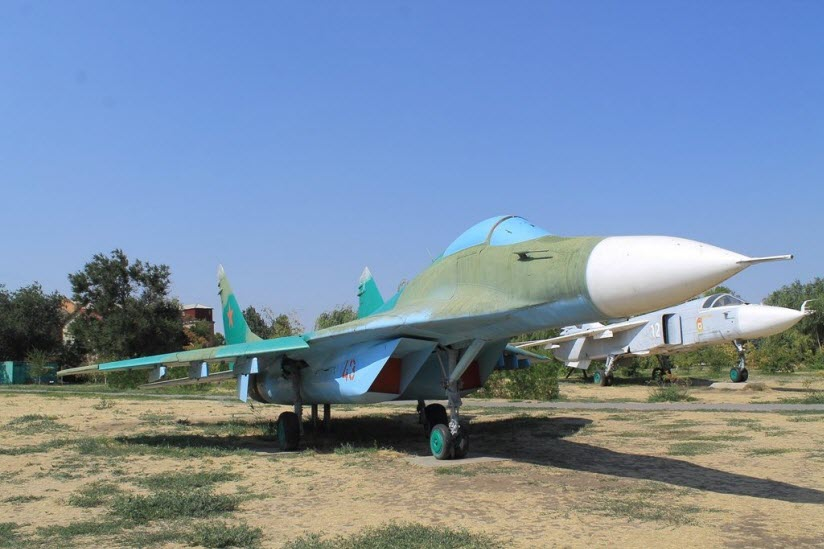

Музей авиационной техники в Парке Победы
Событиям Великой Отечественной войны посвящен один из городских парков. Он был разбит в 2005 году по случаю шестидесятилетия Победы и назван в честь неё. Спустя же два года, в 2007 г., в парке появилась экспозиция под открытым небом. В ней представлены образцы военной авиации. Здесь можно увидеть легендарные самолеты Су-24, Миг-24 и многие другие. Есть в числе экспонатов макет ракеты стратегического назначения. Интересен тот факт, что музей авиации расположился вблизи здания, где в 50-е годы находился Штаб бригады Ракетных войск. Наличием такого интересного музея город обязан одному из местных предпринимателей, который за собственные средства выкупил все представленные в парки образцы.